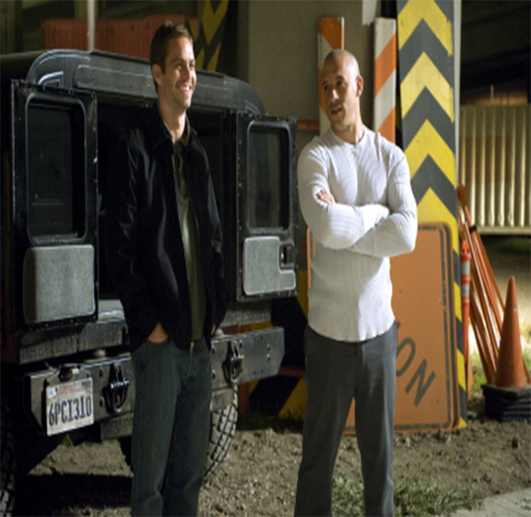

The film, the fourth film in the Fast and Furious series, was released in 2009 and is directed by Justin Lin, with Dominic Toretto played by Van Diesel and Brian O'Connor played by Paul Walker. The story of the film, which follows the first one, revolves around the themes of revenge, justice and loyalty.
The film begins with Dominica and his team carrying out illegal tanker robberies in Central America. During an operation, due to an accident, Dominica decides to leave the team to protect his girlfriend Letty. He retreated to Dominican Republic in the hope of a quiet life. However, after a quiet moment, Dominica learns of Letty's murder in Los Angeles, which changes his life forever. Dominica decides to return to Los Angeles to seek revenge on Letty's killer.
In order to get close to Braga, Dominica and Bryan infiltrate the organization and participate in a street racing event in an attempt to become part of the Braga team. Through a series of drag racing and tactics, they managed to attract Braga's attention and gradually uncover the larger conspiracy behind it. In the process of tracing, the two men are constantly faced with life-and-death tests, but also rebuild mutual trust and friendship.
The film climaxes in a thrilling chase across the border, as Dominica and Bryan battle Braga's men in an underground tunnel in Mexico. In the intense hunt, Brian will do whatever it takes to help Dominica, and eventually they succeed in capturing Braga and avenging Letty.